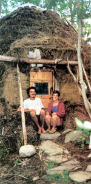
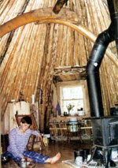
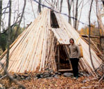
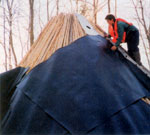
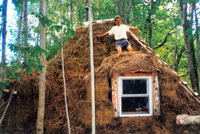
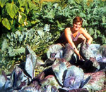

Learning Earthways
By Chris Knapp
February/March 2004
My wife, Ashirah, and I live and work at Earthways, a school in Canaan, Maine, that teaches classes in crafts and other natural skills. Together, we have been fortunate enough to build a simple life that requires a minimum of material possessions.
When I first walked the long dirt road to Earthways in 1997, I was just out of high school and ready to prove that there was a better way to live and that I could live it. I had within me a sincere desire to learn to live in harmony with the Earth. That desire has taken me down a path that I would not trade for any other. I have also been fortunate enough to share that path with others.
I grew up near Portland, Maine, and first came to Earthways as part of an independent study program while I was attending the College of the Atlantic in Bar Harbor, Maine. Earthways was founded by Nancy and Ray Reitze. As a young boy, Ray was apprenticed to a Native American elder of the Micmac tribe who taught him an Earth-based philosophy and the life skills used in the Micmac homeland, the forests of Maine and eastern Canada. Ray now passes that knowledge on to others: Earthways is dedicated to teaching the ancient skills of Earth-based peoples and combining those traditions with the modern world to create a conscientious and sustainable lifestyle.
I already knew a few traditional skills when I arrived at Earthways because I had just completed a year at an alternative school in Norway. My first winter at Earthways, I built a gamme, a traditional dwelling of Scandinavia's Sami people, who also are called Lapps. Although this lodge-a tipi-shaped structure covered with straw for insulation-was intended to be a winter shelter, I ended up living there for several years; I stayed on at Earthways as an apprentice, living on the property and teaching classes. Four years later, I married Ashirah, Ray's other long-term apprentice.
The first lodge I built was only 11 feet wide, but Ashirah and I lived there happily for more than two years before building a new lodge together. Our current home is a larger version of the first gamme I built; it is 20 feet in diameter, or a little more than 300 square feet. Our home has a wood floor, cob entryway, three dormers for windows and a door. At the top, the poles rest around a wooden hoop, forming a large circular skylight.
The supporting structure of the lodge consists of two strong arches made from four curved trees mortised together at the top by a ridgepole, which holds the arches apart. The arches support hundreds of peeled fir and cedar lodgepoles, which we carefully thinned from our woods. We waterproofed the structure with a layer of recycled floormatting rubber that is invisible from inside and out. Over the rubber we stacked square hay bales for insulation. The hay continually decomposes, so we add more when needed. Our foundation for the poles is loose rock piled 2 feet across and 1 foot high; the main support arches are on large rocks.
We enjoy many things about living in this style of house. The small space has never been a problem. We live life outdoors, and we appreciate our home for what it really is: a shelter from the weather, a place to be warm and dry. The full bale's width of insulation from the ground to the skylight allows us to burn barely two cords of wood a year for all our cooking and heating needs. This eliminates the need for a chain saw and allows us to enjoy taking care of our woods while piling up firewood.
We have wonderful dry-cold storage under our floor, which we access by trapdoors. Although we have a true root cellar outside for the bulk of our winter vegetable crops, the cold storage under the floor gives us a place for apples and cabbage, which prefer drier conditions and don't store well with potatoes. Squash, onions and garlic keep very well under our bed and we don't have to worry about them freezing while we are away. Last winter, we came home after two weeks' absence during subzero weather and found the water in our jug not even skimmed with ice.
Because of its size, our home is lit easily with one DC light, powered by a small solar panel. Some facilities we share with Ray and Nancy, including the root cellar and a water pump. We carry water from the outside pump into the lodge, and we collect rainwater for some of our needs. We also seasonally use a nearby stream.
Our home's smallness keeps us focused on what we really need. We think possessions weigh us down, so every few months we go through the house and give away whatever we can. The material things that bring us the greatest pleasure are those that we really need, especially what we make ourselves.
Ray has taught us many crafts. We learned to make snowshoes from ash and rawhide; many types of baskets from roots, shoots, bark and grass; mittens, vests and moccasins from bides we tan; and toboggans and pack baskets for carrying gear on trips. I love to make things and, originally, this got me into trouble; working all day in the woods or garden, and continuing some sort of craft indoors at night caused me to develop tendonitis. For some time I feared the pain in my hands might separate me from the life I had chosen, but then Ray helped me to see the emotional roots of my problem: I was working too hard to prove to myself that I could live this lifestyle.
Once we cleared that up, the healing was straightforward with self-massage and stretching. Though I still work full days, I am now careful not to get into a rut where I am working toward an end without enjoying the day itself. There will always be a thousand things to do, but some days you must wake up, greet the sun and do nothing but follow an animal track in the snow or watch leaves fall from the sky.
Gardening gives us great pleasure year-round. Our techniques are nothing new to organic gardeners-lots of compost and lots of mulch. We enjoy all the summer treats-eggplant, cucumbers, sweet peppers and tomatoes-and in winter we eat large amounts of root vegetables, such as parsnips and potatoes, as well as cabbage, squash, onions and garlic because we can store these without processing. We gather raspberries and blackberries, and this year we got 40 gallons of wild blueberries. Dry beans are another staple for us, as well as dry corn for corn bread and soup (provided the porcupines, skunks and raccoons leave any for us). We dry many wild greens and some green vegetables, but try to stay away from canning because it is labor-intensive. We do can tomatoes and any berries we don't dry. In the winter we fill a freezer with venison from deer killed on the road. We empty the freezer before the spring thaw, so it requires no electricity.
We grow grain, and we grind wheat, oats and corn to make different breads. At this point the only foods Ashirah and I buy are olive oil, salt and a few treats here and there-occasionally we buy butter and cheese. We believe buying organic and local foods is important. Through the years we have become stricter with ourselves as we realize the power to change things lies in our hands. It's not agribusiness and giant seed companies destroying our agriculture and health; it's we who choose to buy their products. If we all look hard at our actions, we can always find room for improvement. If we all decided to buy 100-percent organic food, we could change the way food is grown in just a few short years.
For Ashirah and me, the future looks bright because we are choosing a bright path. We understand that we can only truly change ourselves, and peace on Earth must start with inner peace.
After five wonderful years at Earthways, Ashirah and I have a new adventure in mind. We hope to continue to work with Earthways, but also to create a school of our own. We are thankful for all we have been given here, and excited to give it to others in our own way, on our own land, which we recently bought in Temple, Maine.
Before settling down on our new homestead, we are spending the winter in the timberlands of northern Maine. We are only bringing food we have grown or gathered and will supplement our stores with meat from subsistence hunting, trapping and fishing. This is a dream we both share, and we have spent many years learning the skills that give us confidence for the journey.
When we return in March, we will settle on our own land and begin cutting poles for another gamme. We work toward the continuation of our vision, striving to combine the ways of native peoples, pioneers and the modern world into a life that honors the Earth and is a joy to live.
Mother Earth News
|
 Sally Kwan Chris and Ashirah Knapp in front of their Scandinavian-style lodge at the Earthways School near Canaan, Maine. |
 Sally Kwan Ashirah sits beside the woodstove, which she and Chris use for heating and cooking. The arch visible above her head is one of two that provides structural support for the lodge. |
 Sally Kwan The understructure of this Scandinavian gamme consists of two arches that will support the weight of hundreds of lodgepoles. |
|
 Sally Kwan Lodgepoles give the dwelling shape. A rock foundation keeps the poles off the ground-one of several design improvements made on Chris' first lodge. |
 Sally Kwan Ashirah lays mats of recycled rubber to waterproof the structure. The orange vest makes her more visible to passing hunters. |
 Sally Kwan Chris stands atop the completed gamme. The straw provides a thick layer of insulation that will keep the lodge warm, even in the snow. |
|
 Sally Kwan Ashirah in the garden, harvesting cabbage |
|
|